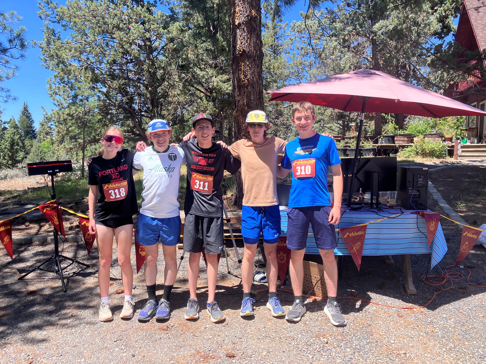
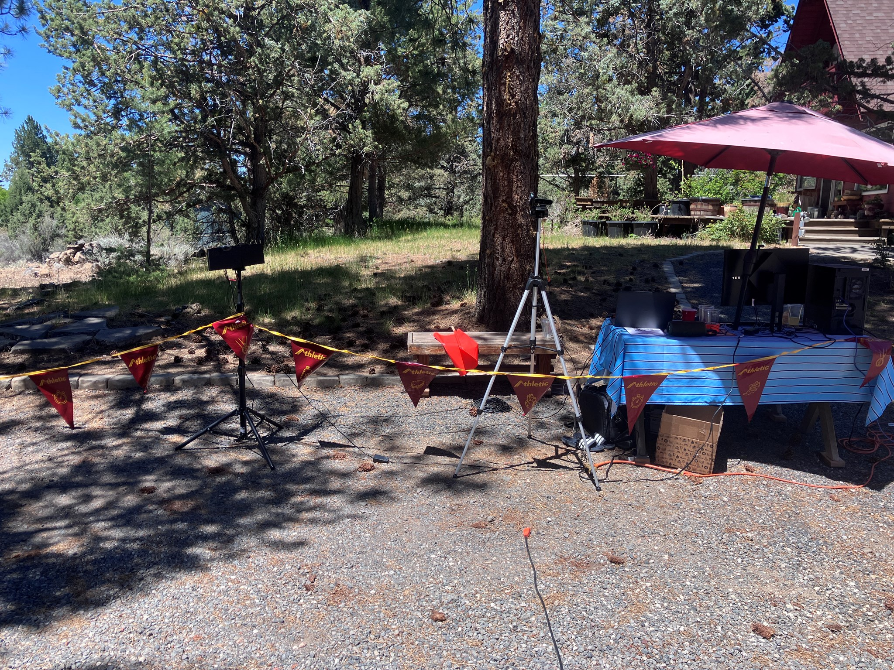

PhotoFinishPro is an athletic timing company based in Bend, Oregon, that specializes in track and cross country timing. Our timing system offers an easy to use interface, while providing accurate results that can be directly uploaded to Athletic.net or Athletic.live.
Contact us at PhotoFinishProTiming@gmail.com